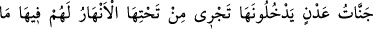
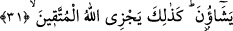
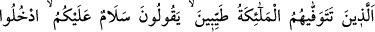
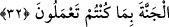

Dünyâ denizinin üstünde batmadan durabilir.
et-Te’vîlâtü’n-Necmiyye’de denir ki: “Âyet işâret etmektedir ki vusûl ehli muttakîler
için dünyâ ve âhiret yurdundan başka bir yurt daha vardır. Onların yurdu indiyyet yani
Allah’ın huzûrunda olma makamında, sıdk koltuklarında olma mertebesidir. O yurt ne
güzel yurttur!
31. (O yurt) girecekleri, zemininden ırmaklar akan Adn cennetleridir. Onlar için
orada diledikleri her şey vardır. İşte Allah, takvâ sâhiplerini böyle mükâfatlandırır.
O yurt “girecekleri, zemininden ırmaklar akan Adn cennetleridir.” Adn, özel
isimdir. Yâni, onlara Adn bahçeleri vardır. Evlerinin altlarından dört nehir akar. Bu
nehirlerin kaynağı da o bahçelerdir. “Onlar için orada” o cennetlerde “diledikleri her
şey” canlarının çekip sevdikleri çeşit çeşit nîmetler “vardır.”
Beyzâvî der ki: Âyette insanın bütün arzu ettiklerini ancak cennette bulacağına tesbîh
vardır.
Kâşifî der ki: “Cennet ehli, peygamberlerin derecelerine, velîlerin menzillerine ve
şehidlerin mertebelerine ulaşmak istese ne olur?” diyen kimseye şöyle cevâb verilir:
Böyle bir istekte bulunmayı gerektirecek öfke ve hased cennette yoktur. Cennet ehli
sâhib oldukları şeylere râzı olmuşlardır.”
et-Te’vîlâtü’n-Necmiyye’de denir ki: “Âyet işâret eder ki muttakîlerden bazılarının
dileği cenneti ve nîmetleridir. Bazılarının dileği cenneti geçip indiyyet makamında sıdk
koltuklarında olma mertebesine ulaşmaktır. Dolayısıyla onlara tercih ettikleri cennet ve
sıdk koltukları verilir.”
“İşte” bu tastamam mükâfât gibi “Allah, takvâ sâhiplerini” şirk ve mâsıyetlerden
korunan herkesi “böyle mükâfâtlandırır.”
32. (Onlar,) meleklerin “Size selâm olsun. Yapmış olduğunuz (iyi) işlere karşılık
cennete girin.” diyerek tertemiz olarak canlarını aldıkları kimselerdir.